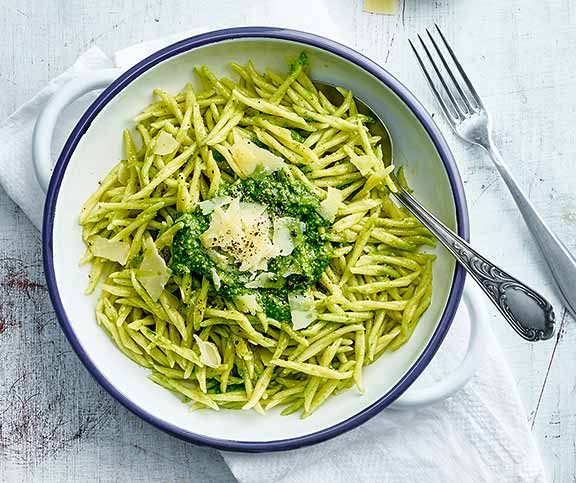

<p>
Trofie mit Pesto
Trofie mit Pesto
Das Pesto mit Bärlauch, Spinat und Mandeln ist blitzschnell zubereitet und verleiht den Teigwaren einen Hauch von Frühling.

einfache Zubereitung
Vor- und zubereiten: ca. 20 Min.
vegetarisch
Zutaten
Anzahl Personen
4
50 g	Bärlauchblätter
50 g	Jungspinat
40 g	Mandelstifte
0.75 TL	Salz
1.5 dl	Öl (nicht kalt gepresst)
40 g	geriebener Sbrinz
500 g	Teigwaren z.B. Trofie
Salzwasser, siedend
60 g	Sbrinz


Dieses Rezept teilen

Via Facebook teilen
 
Via Twitter teilen
 
Via Pinterest teilen
Und so wirds gemacht:
Bärlauch und Spinat mit Mandelstiften, Salz und Öl pürieren, Käse daruntermischen.
Teigwaren im siedenden Salzwasser al dente kochen, abtropfen, mit dem Pesto mischen.
Käse mit dem Sparschäler abschälen, auf den Teigwaren verteilen.
Nährwert pro Portion (1/4):
kcal
952
F
53g
Kh
91g
E
25g
</p>


